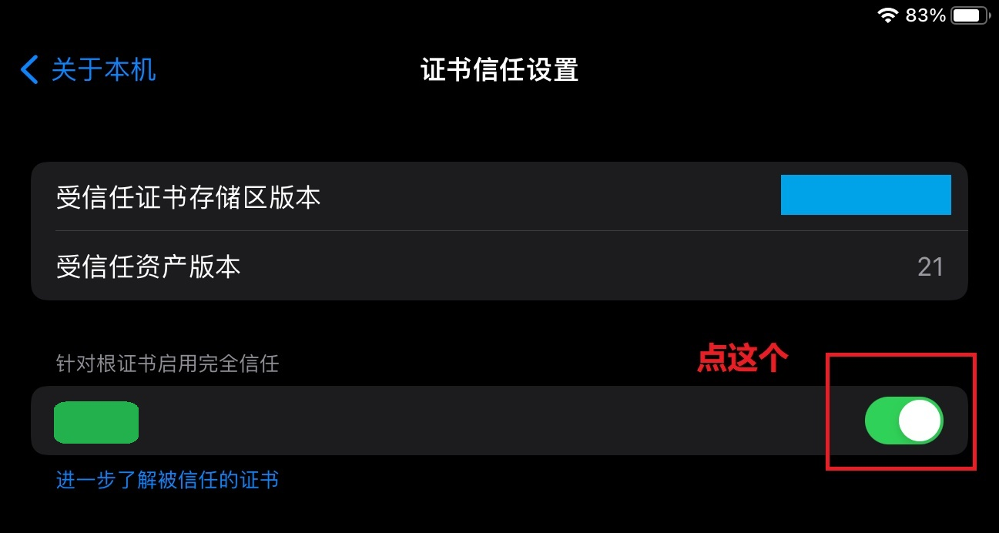

在 Docker 中部署 Nginx，并在局域网配置 SSL 证书
序言
在上一篇博文里，我成功搭建了 LANraragi 服务器，并且分享给了家庭局域网内的其他设备。但是，又产生了新的问题：
- LANraragi 不需要登录就能访问其中的漫画；
- 就算 LANraragi 有登录的功能，用的也还是 HTTP 明文传输，相当于没有密码；
这些问题的根源是：可以联网的手机、智能家居都和 LANraragi 服务器在一个局域网内，这些设备并不可信，可能有后门（“用户自愿传输隐私数据以改善服务”）。无论如何，上述问题亟需解决。
解决方案 —— Nginx：
- 使用 Nginx 自带的 basic authentication，只有输入账号密码才能访问 URL；
- 利用 Nginx 的反向代理。只要给 Nginx 配置了 HTTPS，被代理的软件都可以使用加密传输；
因此，重点在于 Nginx 的配置和 SSL 证书的配置。麻烦之处在于，我要给内网 IP 请求证书，并且这个 IP 没有对应的域名。这篇文章探讨了这些解决方案，同时也是我第一次接触 Nginx 和 SSL 证书的配置。
Nginx 容器
拿到默认配置文件
创建一个临时的容器，从里面复制 nginx.conf
1 | docker run --name tmp-nginx-container -d nginx:1.24 |
Docker Compose
1 | version: "3" |
- 除了配置文件，还要映射一个目录，存放 SSL 私钥和证书；
- 网络模式要选桥接，不然访问不了其他容器；
- 只映射了
443端口，不准备开放80端口 ；
SSL 证书
创建 CA
创建 CA 密钥 myCAPK.key 和（自签名）证书 myCACertificate.crt
1 | openssl req -x509 -sha256 -nodes -days 3650 -newkey rsa:4096 -keyout myCAPK.key -out myCACertificate.crt |
用这个命令生成的私钥和证书可以直接作为 Nginx 的 SSL 配置。但是，如果一个新的服务器也需要配置 SSL 证书，那么我们就需要手动让客户端设备信任这个新的证书，很麻烦。
如果把这个证书用作 CA 证书，那么只要设备信任了这个证书，使用 CA 签字的所有其他证书就自动地被信任了。因此，设备上只要手动添加一次 CA 证书。
查看证书信息
1 | openssl x509 -text -noout -in myCACertificate.crt |
信任 CA
这个 CA 证书是我们自己创建的，系统是肯定不认的，我们需要安装到系统中。
如果没有这一步，浏览器可以建立 HTTPS 连接，但会提示连接不安全。
Windows
控制面板 | internet 选项 | 内容 | 证书

以根证书颁发机构的身份信任 CA

Android
不同系统安装证书的位置不一样，但基本的选项是一样的。这里以三星为例：
要么选 『CA 证书』，要么选 『VPN 和 app 用户证书』。不要选『WLAN 证书』，这个没用。

IOS
这里以 iPadOS 15.7 为例
-
打开 email，将 CA 证书作为附件发给自己；
-
用 Safari 浏览器登录邮箱，点击附件，选择“下载描述文件”（此时弹出提示，进入设置界面确认安装）；
-
进入设置，选择“安装描述文件”，输入锁屏密码；
-
设置 | 通用 | 关于本机 | 证书信任设置：开启完全信任

创建服务器密钥
1 | openssl genrsa -out nginx_server.key 4096 |
创建服务器 CSR（证书签名请求）
创建 openssl.cnf，内容如下：
1 | authorityKeyIdentifier=keyid,issuer |
这个文件的配置其实很复杂，但是对于这个案例，只需要这几个配置项。
DNS.x对应主机名/域名；IP.x对应 IP 地址；
x都是正整数
这里使用配置文件的唯一目的：在 CA 签字时，将服务器的域名和 IP 与证书绑定，表示这个证书确实属于该服务器，而不是别人伪装的。如果没有这个配置，浏览器会提示错误：NET::ERR_CERT_COMMON_NAME_INVALID。
使用如下命令：
1 | openssl req -new -key nginx_server.key -out nginx_server.csr |
CA 签字
1 | openssl x509 -req -extfile openssl.cnf -in nginx_server.csr -CA /opt/MyOwnCA/myCACertificate.crt -CAkey /opt/MyOwnCA/myCAPK.key -CAcreateserial -out nginx_server.crt -days 398 |
为什么设置
-days 398？—— 根据苹果的新政策，服务器证书不能超过 398 天，否则 SSL 连接出错（NET::ERR_CERT_VALIDITY_TOO_LONG）。注意，只有苹果这么要求，如果我们确定网站不会被苹果设备访问，那么设置 10 年也可以。
签字完毕后，就有了最终需要的私钥 nginx_server.key 和证书 nginx_server.crt。
Nginx 配置
SSL
1 | server { |
这只是最基本的配置，实际有更多 SSL 的配置，但目前够用了。
Basic Authentication
1️⃣首先要创建用户名和密码：
1 | # 没有该文件就先创建一个 |
然后系统提示给 alpha 用户设置密码。要填加多个用户，用相同命令即可：
1 | htpasswd /opt/docker/nginx_auth/.htpasswd-lanraragi beta |
在 CentOS 中，
htpasswd命令属于httpd-tools。如果没有安装，系统会提示安装。
2️⃣在 Nginx 中配置：
1 | location /api { |
auth_basic在登录界面会提示用户；auth_basic_user_file指向之前创建的.htpasswd；
也可以全局启用，但在具体的路径里关闭认证：
1 | server { |
例子：Lanraragi
回到最初的需求：反向代理 Lanraragi，并提供登录功能。
Docker compose:
1 | version: "3" |
Nginx 配置：
1 | user nginx; |
Lanraragi 本身的路由策略没法改，这意味着必须把 / 原封不动地映射到 Lanraragi 的 URI。也就是说，需要给 Lanraragi 一个单独的 Nginx 实例。
从计算资源的角度，问题并不大，因为一个 Nginx 实例占用不到 20 MB 的内存。
如果给每个现有的软件都用一个 Nginx ，那么这些 Nginx 实例可以共享一个 SSL 证书。毕竟访问 Linux 主机时，是通过端口区分 Nginx，而证书是和 IP / 域名 绑定的。尽管可以这么做，我不太清楚这是不是最佳实践。但在家庭局域网的场景中，这显然够用了。
参考
- ChatGPT
- HTTPS using Nginx and Let’s encrypt in Docker
- Creating a Self-Signed Certificate With OpenSSL
- Nginx Docker hub
- 局域网内搭建浏览器可信任的SSL证书
- How To Create a Self-Signed SSL Certificate for Nginx in Ubuntu 16.04
- How to generate a self-signed SSL certificate using OpenSSL?
- Restricting Access with HTTP Basic Authentication
- 在iOS设备上安装根证书(CA)
- Enabling self-signed certificates in iOS 15
- Apple: About upcoming limits on trusted certificates